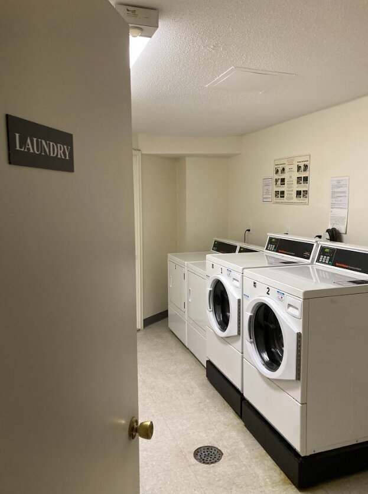
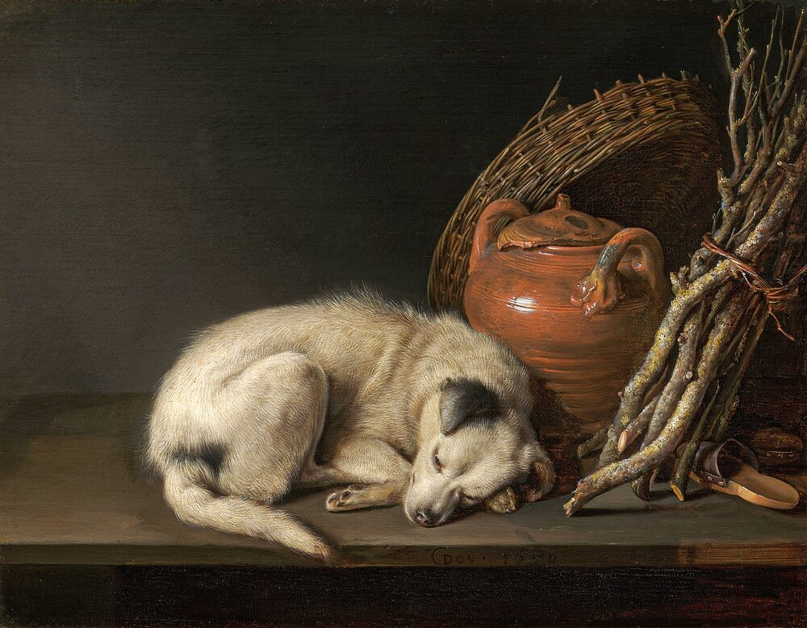

B1 · Everyday Life
A Day in the House
One family, one Saturday, and the vocabulary of every room they walk through.
Play the audio and follow along, then read it again on your own. Tap or hover over a highlighted word to see what it means.
The sun came through the blinds and woke Sarah before her alarm, which almost never happens and which she decided to treat as a good sign. She stretched, pushed the covers off, and went downstairs.
Her father John was already in the kitchen. The coffee machine was making the noise it makes — a gurgle and then a long hiss — and the smell had reached the stairs before she did. He had the radio on low and was laying the table: plates, bowls, and a handful of silverware he was distributing without much attention to which side anything went on.
Upstairs, her brother Ben was still asleep. His laundry basket had been full for several days and had now reached the stage where clothes were arranged around it rather than in it.
Sarah and John ate scrambled eggs and toast and went through the day. There was a leaky faucet in the upstairs bathroom that had been dripping since Tuesday, and a light bulb in the hallway that had gone and that nobody had replaced because the ceiling there is high and the ladder is in the garage.
Ben came down at half past ten, made a face at the smell of coffee, ate three pieces of toast standing up, and moved to the couch with the remote before anybody could give him a job.
Sarah started a load of washing, which filled the laundry room with the smell of detergent, and then went to deal with the faucet. She got the toolbox from the garage, turned the water off under the sink, took the tap apart on a towel so the small parts would not roll away, tightened the screw that had worked loose and replaced the rubber washer, which had gone hard and flat. Then she put it back together and turned the water on and nothing leaked, which she enjoyed more than she expected to.

John spent the afternoon in the home office, which is the tidiest room in the house and the only one with a rule about it. Books on the shelves, files in order, and a door he closes.
Ben, having exhausted the television, went out to the yard and threw a ball for the dog for forty minutes. The dog did not get bored before he did.

Sarah's mother Jane came home at six and the two of them made dinner together, which is the part of the week they both protect: chopping, talking, one of them stirring a pot while the other says something and has to repeat it over the noise of the extractor fan. They made a stew, and it filled the downstairs with the smell of it for the rest of the evening.
At some point between the washing machine finishing and the stew being ready, Ben carried the ladder in from the garage without being asked and changed the hallway bulb. Nobody saw him do it. Everybody noticed, because the hallway had been dark for a fortnight and suddenly was not, and nobody said anything about it, which in that house counts as a conversation.
Key Vocabulary
- blinds the slats you lower over a window instead of curtains
- covers the sheets and blankets on a bed
- to gurgle to make a low bubbling sound
- to hiss to make a long sound like escaping steam
- to lay the table to put out the plates and cutlery before a meal
- silverware knives, forks and spoons (British: cutlery)
- laundry basket the container dirty clothes are put in
- leaky letting liquid escape slowly
- faucet the fitting you turn to get water (British: tap)
- to drip to fall in single drops
- light bulb the glass part of a lamp that gives the light
- to go to stop working, said of a bulb or a machine
- ladder the frame with steps you climb to reach something high
- a load of washing one batch of clothes put through the machine
- detergent the soap used for washing clothes or dishes
- toolbox the box holding the tools for small repairs
- to take apart to separate something into its pieces
- to work loose to gradually become less tight through use
- washer the small flat ring that seals a joint
- to leak to let liquid escape where it should not
- yard the outdoor space behind a house (British: garden)
- extractor fan the fan over a cooker that pulls away steam and smells
- stew meat and vegetables cooked slowly in liquid
- fortnight two weeks
A Day in the House — B1 · Everyday Life · Renan the Teacher, English Language Academy · https://renangrossi.github.io/englishclasses/reading/b1/a-day-in-the-house.html
Interactive Exercises
Practice
Complete each exercise, then click Submit to see your score and an explanation for every answer.
Speaking & Writing
Discussion
There are no right answers here — use these to practice speaking, or write a short answer to each.
- Describe your own home room by room, using at least eight words from this text.
- Sarah enjoyed fixing the faucet more than she expected. Is there a small repair you have taught yourself?
- The bulb went unchanged for a fortnight because of two small obstacles. What is the equivalent in your house?
- The family acknowledges Ben's help by not mentioning it. Does your family do things that way, or the opposite?
- Write about 150 words describing a Saturday at home, showing what the people are like through what they do rather than by describing them.